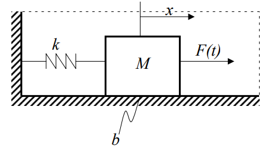

Función transferencia#
Modelos de sistemas lineales e invariantes en el tiempo#
La forma típica de representar un sistema lineal e invariante en el tiempo (LTI) SISO, es mediante el uso de la transformada de Laplace.
Sea un sistema con condiciones iniciales nulas, entonces el sistema se puede expresar matemáticamente como:
donde \(Y(s)\) es la transformada de Laplace de la salida \(y(t)\) para una entrada arbitraria \(u(t)\), cuya transformada de Laplace es \(U(s)\).
Notar que con esta definición, lo que se transforma al dominio de Laplace son las señales de entrada y salida. No es un sistema.
Importante
Se puede demostrar que \(H(s)\) es la respuesta del sistema a una señal de entrada impulso unitario \(\delta(t)\).
Para sistemas Lineales Invariantes en el Tiempo (LTI), la relación \(\dfrac{Y(s)}{U(s)}\) se mantiene constante para todo \(U(s)\).
Obtención de la función transferencia de un sistema:#
La función transferencia de un sistema se puede obtener de varias formas:
Aplicando la definición, es decir, aplicando \(u(t)\) para medir \(y(t)\), transformar ambas señales al dominio de Laplace y luego obtener \(H(s)=\dfrac{Y(s)}{U(s)}\). Esto no es práctico.
Aplicar un impulso \(u(t)=\rho(t)\) y hacer las transformada de Laplace de la respuesta. Es un caso particular del método anterior haciendo que \(U(s)=1\).
A partir de las ecuaciones temporales que dominan la dinámica del sistema se resuelve \(\dfrac{Y(s)}{U(s)}\). Esta es la forma en que por lo general se obtienen las funciones transferencias de los sistemas en forma analítica.
Ejemplo general:#
En general un sistema dinámico se representa como una ecuación diferencial de orden \(n\), Es decir:
Donde \(y(t)\) es la salida del sistema y \(u(t)\) es la entrada del sistema, haciendo la transformando por Laplace sabiendo que \(\mathcal{L}\{u(t)\}=U(s)\) y que \(\mathcal{L}\{y(t)\}=Y(s)\), tenemos:
si asumimos que las condiciones iniciales para \(y(t)\) y \(u(t)\) son nulas, se reduce a:
Despejando podemos obtener:
Importante
En general los sistemas dinámicos en el dominio temporal se describen matemáticamente a partir de ecuaciones diferenciales. Es importante notar, que en el dominio transformado de Laplace estas ecuaciones diferenciales se transforman en ecuaciones algebraicas, resultando en un tratamiento matemático más sencillo.
Ejemplo #1: Sistema electromecánico (motor eléctrico)#
Desarrollo#
Supongamos CI nulas, es decir \(i_a(t=0)=0\) y \((\theta_m(t=0)=0)\) entonces de las ecuaciones del motor obtenidas en ejemplos anteriores y aplicando la transformada de Laplace, tenemos:
agrupando las variables y despejando de la segunda ecuación la corriente \(I_a(s)\):
Este sistema tiene 2 entradas, la entrada que podemos controlar \(E_a(s)\) y la entrada de perturbación \(T_r(s)\), por ser un sistema LTI podemos hallar las FTs de la siguiente forma:
luego,
luego considerando \(T_r=0\), hallamos la FT desde la entrada \(E_a\) a la salida \(\Theta_m\):
finalmente si consideramos que \(E_a=0\), hallamos la FT desde la entrada de perturbación \(T_r\) a la salida \(\Theta_m\):
Ejemplo #2: masa resorte#
Resolución de las ecuaciones#
Ejemplo sistema mecánico#
{kind=link}
Las ecuaciones que dominan este sistema son:
Podemos obtener la función transferencia de este sistema mediante reemplazando \(x\) por \(y\) y \(F\) por \(u\) y transformando por Laplace, usando la propiedad de la derivada de la transformada de Laplace. Esto es:
Despejando se tiene:
Vamos a definir el sistema según el ejemplo anterior con valores de \(M=1\), \(b=0.1\) y \(k = 10\).
import control as ctrl
import numpy as np
import matplotlib.pyplot as plt
# %matplotlib qt5 #descomentar para obtener ventanas emergentes de las figuras
Definamos primero las constantes del sistema
M=1
b=0.01
k=1
Ahora deinamos la función transferencia
G=ctrl.tf([1],[M,b,k])
Obtengamos los polos (ceros del denominador) de la función transfrencia \(G\)
G.pole()
array([-0.005+0.9999875j, -0.005-0.9999875j])
Ahora vamos a ver la respuesta al escalón.
T1=np.linspace(0,1000,101)
t1,y1=ctrl.step_response(G, T=T1) # cantidad de puntos por defecto
Show code cell source
fig, ax = plt.subplots(1, 1, figsize=(10,4))
ax.plot(t1,y1,label="101 puntos de sim")
ax.grid()
ax.set_xlabel('Tiempo [s]')
ax.set_ylabel('$x$')
ax.legend();
Vemos que esto no se ve del todo razonable. Esas lineas cortadas no se lucen muy armónicas. Vamos a agregar más puntos a la simulación.
T2=np.linspace(0,1000,1001)
t2,y2=ctrl.step_response(G,T=T2)
Show code cell source
fig, ax = plt.subplots(1, 2, figsize=(12,4))
ax[0].plot(t1,y1,label="101 puntos de sim")
ax[0].plot(t2,y2,alpha=0.6, label="1001 puntos de sim")
ax[0].grid()
ax[0].set_xlabel('Tiempo [s]')
ax[0].set_ylabel('$x$')
ax[0].set_title('Evolución completa')
ax[1].plot(t1, y1)
ax[1].plot(t2, y2, alpha=0.6)
ax[1].set_xlim([0,30])
ax[1].grid()
ax[1].set_xlabel('Tiempo [s]')
ax[1].set_ylabel('$x$')
ax[1].set_title('Primeros segundos de la evolución')
fig.tight_layout()
En estas figuras podemos ver como la simulación que devuelve solo 100 puntos no nos muestra de forma correcta la evolución del sistema. Sin embargo, los puntos donde está calculado los valores de la respuesta al escalón si son correctos.
Con 1001 puntos ya podemos ver una evolución mucho más prolija. Sin embargo, para no ver las puntas triangulares que vemos en la figura, debemos agregar algunos puntos más a la simulación.
T3=np.linspace(0,1400,5001)
t3,y3=ctrl.step_response(G,T=T3)
fig, ax = plt.subplots(1, 2, figsize=(12,4))
ax[0].plot(t3,y3,label="5001 puntos de sim")
ax[0].grid()
ax[0].set_xlabel('Tiempo [s]')
ax[0].set_ylabel('$x$')
ax[0].set_title('Evolución completa')
ax[1].plot(t3, y3)
ax[1].set_xlim([0,30])
ax[1].grid()
ax[1].set_xlabel('Tiempo [s]')
ax[1].set_ylabel('$x$')
ax[1].set_title('Primeros segundos de la evolución');
fig.tight_layout()
En los primeros segundos vemos una dinámica que produce rápidas oscilaciones, y se va que muy lentamente el sistema empieza a disminuir esas oscilaciones. En la figura de la izquierda vemos que esta oscilaciones tienden a 0, en un tiempo suficientemente grande. Estos sistemas que tienen dinámicas tan diferentes, por un lado la «lentas» como la que produce la extinción de las oscilaciones en un tiempo grande, y por otro lado las rápidas que se manifiestan en las oscilaciones se los conoce como sistemas rígidos o sistemas stiff.
Sistemas stiff
Son aquellos sistemas que contienen dinámicas muy rápidas y muy lentas actuando a la vez.